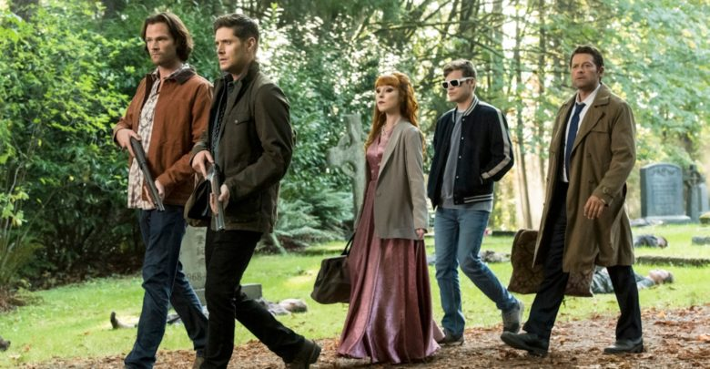
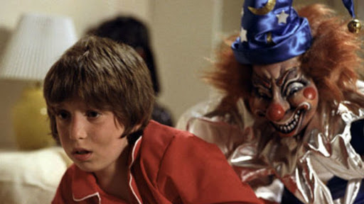

TERROR
Este género es uno de mis favoritos y amo las historias, peliculas, videos o series que sean sobre terror: disfruto sentir el miedo que me causan.Gracias a que tuve 2 hermanos mayores, me acostumbré desde niña a ver estas pelis o series que en su momento causaba gran terror o miedo verlas pero ahora es como que "wow de eso me asustaba xd". Bueno sólo quiero que al veer estos títulos y leer un poco sus reseñas les de ganas de ver alguno.
SUPERNATURAL
Esta es una serie que trata sobre dos hermanos Sam y Dean (Jared Padalecki y Jesen Ackles); sam era un bebé y dean un niño cuando su madre murió quemada en el techo por un demonio, cuando su padre vio eso, sacó a los chicos de la casa que ardía en llamas y empezó a dedicarse a cazar monstruos o espectros sobrenaturales, los chicos van creciendo en un mundo donde ayudan a las personas sin que ellos sepan de su existencia, luego sam se revela y quiere ser alguien normal entonces se va a estudiar derecho mientras dean sigue obedeciendo a su padre y continuan cazando Hasta que un día su padre desaparece mientras investigaba un caso, entonces dean va a buscar a sam para que lo ayude y aunque el no quiso porque ya tenía casi su vida realizada pero al final decide acompañarlo; sam se despide de su novia y se va con dean en busqueda de su padre, pasan dos dias y regresan a la casa de sam pero cuando él empieza a buscar a su novia la ve e el techo y muere de la misma forma en que murió su madre; eso leda rabia a sam por lo que decide abandonar su vida e ir en busca de aquel demonio que le quitó a su madre y a su novia Así vuelven los hermanos a cazar y buscar a su padre, en el camino encuentran vampiros, hombres lobo,leviatanes: se dan cuenta que existen los ángeles e incluso se hacen amigo de uno de ellos. Cada vez se encuentran con más problemas y tendrán que buscar la manera de sobrevivir.
POLTERGEIST
Esta peli recuerdo que la vi a eso de los 5 ó 6 años y me causó mucho miedo, incluso me puse a llorar jajaja, pero igual en ese momento la peli me pareció buenaza que de grande la volví a ver y creo que la disfruté mas. Trata sobre una joven familia que recibe la visita de fantasmas (maaalos) en la casa donde se fueron a vivir. Al principio las apariciones parecen amistosas, mueven objetos en la casa, lo que los divierte y juegan. Pero entonces se vuelven agresivos y comienza una espiral de terror como que golpean a su hijo, lo jalan, su payaso lo empieza a asustar y capturan a la niñita y la meten dentro de la tele. Los señores llaman a tipos cazafantasmas para que los ayude y la cosa se pone fea. En fin ojalá que cuando la veas te asustes mucho como yo de pequeña jajajjaja.